My name is A.J. and I hate school. Do you know which is the worst day of the week? If you ask me, it's Monday.
hate · 매우 싫어하다 / To dislike something very much.
worst · 가장 나쁜, 최악의 / The least good or most unpleasant of all.

My name is A.J. and I hate school. Do you know which is the worst day of the week? If you ask me, it's Monday.
Because Monday is the start of five days of school in a row. That's horrible! Tuesday and Wednesday aren't so great either.
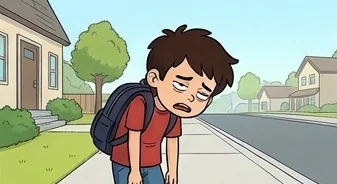
Thursday is a pretty good day, because then we only have one day of school left before the weekend. Friday is really good, because that's when the school week is over. But the best day of the week is Saturday.
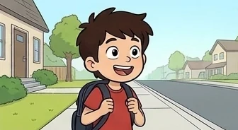
I play peewee football on Saturday, and we don't have school again for two whole days. Too bad it was Monday morning. I was waiting in front of my house for the school bus with my mom.

"You be a good boy, A.J.," my mom told me. "I will." "Don't get into any trouble, A.J.," my mom told me.
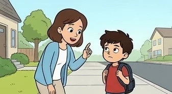
"I won't." "Remember to raise your hand when you want to talk, A.J.," my mom told me. "I will."

"Don't shoot straw wrappers at the girls, A.J.," my mom told me. "I won't." My mom told me about a million hundred other things I wasn't allowed to do until I saw the yellow school bus coming around the corner.

"Mom, I promise not to have any fun at all," I said. "Bye!" The bus pulled up.
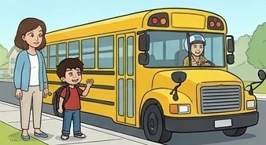
Mrs. Kormel, the bus driver, pushed a button and made the little STOP sign pop out the side of the bus so the cars on the street will stop. We call it the magic STOP sign. That thing is cool.

"Give Mommy a kiss, A.J." No way I was going to kiss my mother in front of all the kids staring out the bus window. That's the first rule of being a kid. Don't ever kiss your mother when other kids are watching!

"Uh, I don't want to be late for school, Mom." "Give Mommy a kiss, A.J." "That's not gonna happen, Mom." "Give Mommy a kiss, A.J." "Over my dead body, Mom."
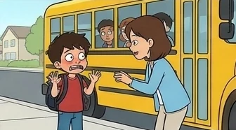
"Give Mommy a kiss, A.J." "I will if you give me a hundred dollars, Mom," I said. My mother tried to wrap her arms around me, but I know how to get away from tacklers. When Mom went to grab me, I threw her a head fake, spun away, and gave her a few of my best fancy footwork moves that I learned playing peewee football.

She didn't have a chance! I sidestepped her and ran on the bus before she could hug or kiss me. Ha-ha-ha!

My mom can't play football for beans. Nah-nah-nah boo-boo on her!
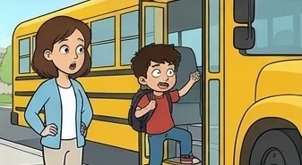
I dashed on the bus and there was Mrs. Kormel, the school bus driver. She was wearing a crash helmet on her head and a silver whistle around her neck. "Bingle boo, A.J.!" she said.

"Bingle boo, Mrs. Kormel." "Bingle boo" is Mrs. Kormel's way of saying "hello." One time I asked her why she doesn't just say "hello" like normal people.

"I'm inventing my own secret language," she told me. "Everybody says 'hello.' But I think 'hello' is boring.

I'm trying to get people to switch from saying 'hello' to saying 'bingle boo.' Secret languages are fun!" Mrs. Kormel is not normal.

"Limpus kidoodle," said Mrs. Kormel. That means "sit down" in Mrs. Kormel's secret language. I looked around the bus.
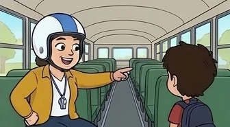
There was a snot-covered kindergartner in the front row behind Mrs. Kormel, and a few angry fifth graders in the back row. Fifth graders are really mean because they get a lot of homework. The more homework you get, the meaner you are.

That's why fifth graders are meaner than fourth graders, and fourth graders are meaner than third graders, and third graders are meaner than second graders. You don't want to go near seventh or eighth graders. They get lots of homework, and they just hate the world.

I hope I never get to high school. I sat down in the middle by myself. Mrs. Kormel stopped the bus at the next corner, and a few other kids got on.
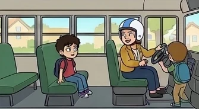
At the stop after that, my friends Ryan and Michael got on. "Bingle boo!" Mrs. Kormel said to Ryan and Michael. "Limpus kidoodle."
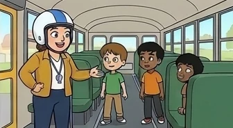
Ryan and Michael sat down next to me. "What did you bring in for Show and Share?" Ryan asked. "I brought in an old light switch."
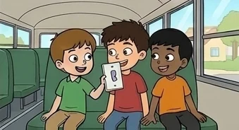
"I brought in a ball of string," said Michael. Show and Share is when we bring something from home that starts with a certain letter of the alphabet and talk about it in class. Today's letter was s.

I took my Show and Share thing out of my backpack. It was an action figure called Striker Smith. He's a superhero from the future who travels through time and fights bad guys with a sharp sword that's attached to his hand.

He can turn into a jet plane, too, and fly when you push a button. I saw a commercial for Striker Smith on TV and bugged my parents until they finally got it for me. "Striker Smith belongs to a secret organization of crime fighters," I told Ryan and Michael, in case they didn't see the commercial.
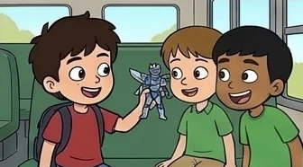
"You should get extra credit," Ryan said, "because Striker Smith has two S's." "He's cool," said Michael. "Sometimes I take my old action figures down to the basement and my dad lets me saw them in half or torture them with his power drill."
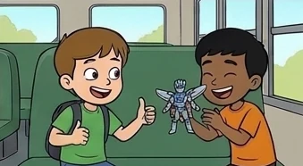